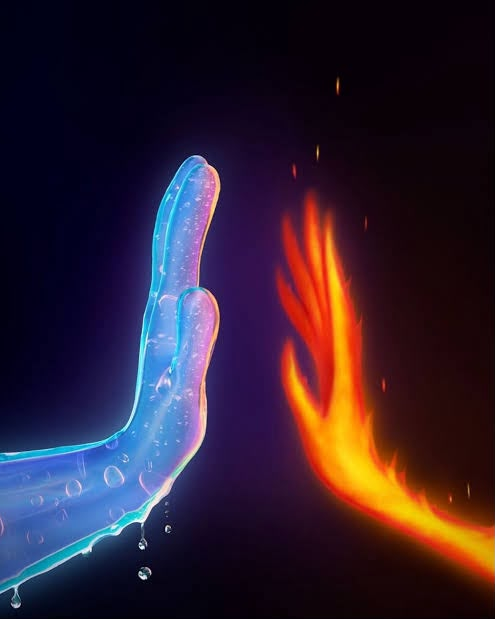

Um livro de amor
Nós duas
❦
Toque para abrir
Minha Nevascah❄️
Sim, por um au-au 🐾
No meio do caos, do riso e do barulho,
você chegou sem pedir licença
e ficou.
Sim, você fez
o que ninguém mais fez:
me viu de verdade
quando eu nem sabia me mostrar.
Sim, você entrou
não pela porta, mas pelo coração.
Entrou na minha nevasca
e não teve medo do frio ❄️
Sim, você conseguiu
atravessar minha nevasca sem congelar,
me achar no meio do frio
e me esquentar sem me apagar.
Sim, você é a minha pessoa,
meu fim da nevasca,
meu começo de tudo,
meu calor no meio do caos.
— Meu amor
Tocando a nossa trilha sonora

Foi assim
Sotam
0:00
0:38
Para meu amor🫀
Meu amor,
Me pego olhando as estrelas e me pergunto qual o significado de perfeição? A luz resplandecente das estrelas talvez, mas ela não chega aos pés do brilho dos seus olhos. Cativando-me a cada dia, a cada risada, cada briguinha, cada vez que liga para dormir.
Amar-te fez a minha vida mais bela, os meus dias mais coloridos, quando tudo não havia mais sentido. Gritava ao mundo que já havia conhecido muito do amor, mas como amar? Eu não sabia nada, meu bem.
Há tantas perguntas que precisam ser respondidas sem que eu tivesse sequer perguntado. Existe uma parte de mim que só quer te ter por perto, te sentir minha e, outra, adora a sensação de saber que és minha.
Sei pouco sobre ti, mas tão pouco me deixa absurdamente encantada. Gostaria de saber muito mais, poderia me dizer o que preferes? Vinho tinto ou branco? Noite estrelada de Van Gogh ou Lírios-d'água de Monet? Girassóis ou begônias? Em qual ritmo tu danças? E o que mais te encanta? Que roupa gostas de vestir? E quando me fizeste ser sua?
Sou teu refém, sou um caos sem você e passo muito longe da perfeição que tu és. No entanto, opto por viver com sua nevasca que me esfria, mas aquece quando estou contigo, que acalma meus dias e mente conturbada, me faz sorrir e tem o lado mais puro que ninguém jamais teve de mim.
Você tem posse sobre a pessoa que eu sou e não me arrependo disso. Nenhuma das perguntas feitas importa desde que te tenha. Com toda certeza sou sua, assim como as estrelas pertencem ao céu.
— inteiramente sua!